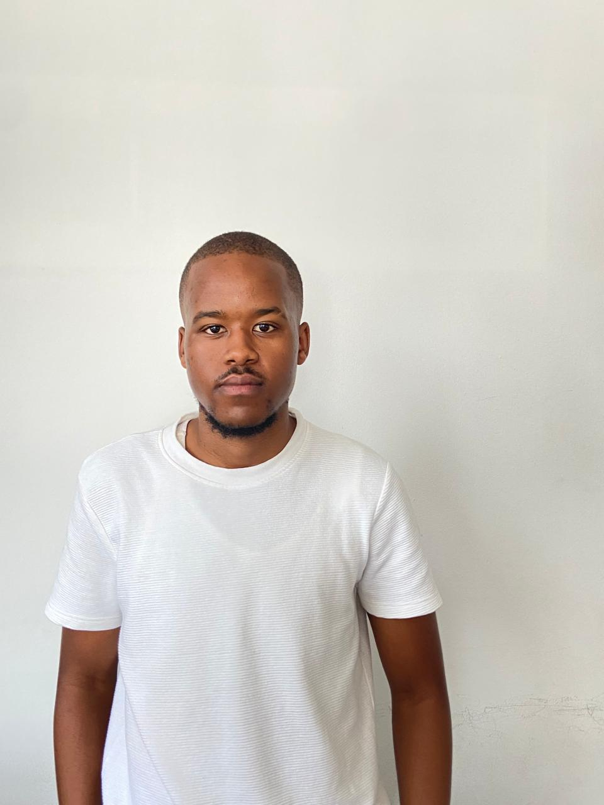

Curriculum Vitea of Ayanda Ntombela

Objective
I am an eager, self-driven,
trustworthy, accountable, and hard-working individual. I am a mature team collaborator and can adjust to any difficult circumstances. I am able to collaborate effectively in a team and also work independently. I am
capable of functioning well in stressful situations and meeting stringent deadlines.
Education
Durban University Of Technology
Diploma in Public Relations and communication management
Alexandra High School
Matric
Experience
- PMB Community chest
- I complited my in-service training program at PMB & District Community
Chest.It was a overwhelming opportunity and experience to work with this
amazing organization as it thought and helped develop my :
professinal Skill
- To understand the organisation's policy's,purpose, functions,develop a
capacity to contribute ideas to
the organizations development, creative thing and also slove
problems in a professional manner.
Organisational Abilities
- Able to listen and follow given instructions,Meet deadlines for assigned task, execute a Publications
plan successfully, the
ability to work as a team member and also developed office administration skills.
Personal Skills
- Making sure I arrive in the work premises on time, being honest and responsible with my
work,maintaining positive relationship with staff members and public always.
Communication Skills
-
Speaking/ listening and understanding skills.Telephone skills. Public communication and
presentation skills. InternL and external communications skills.